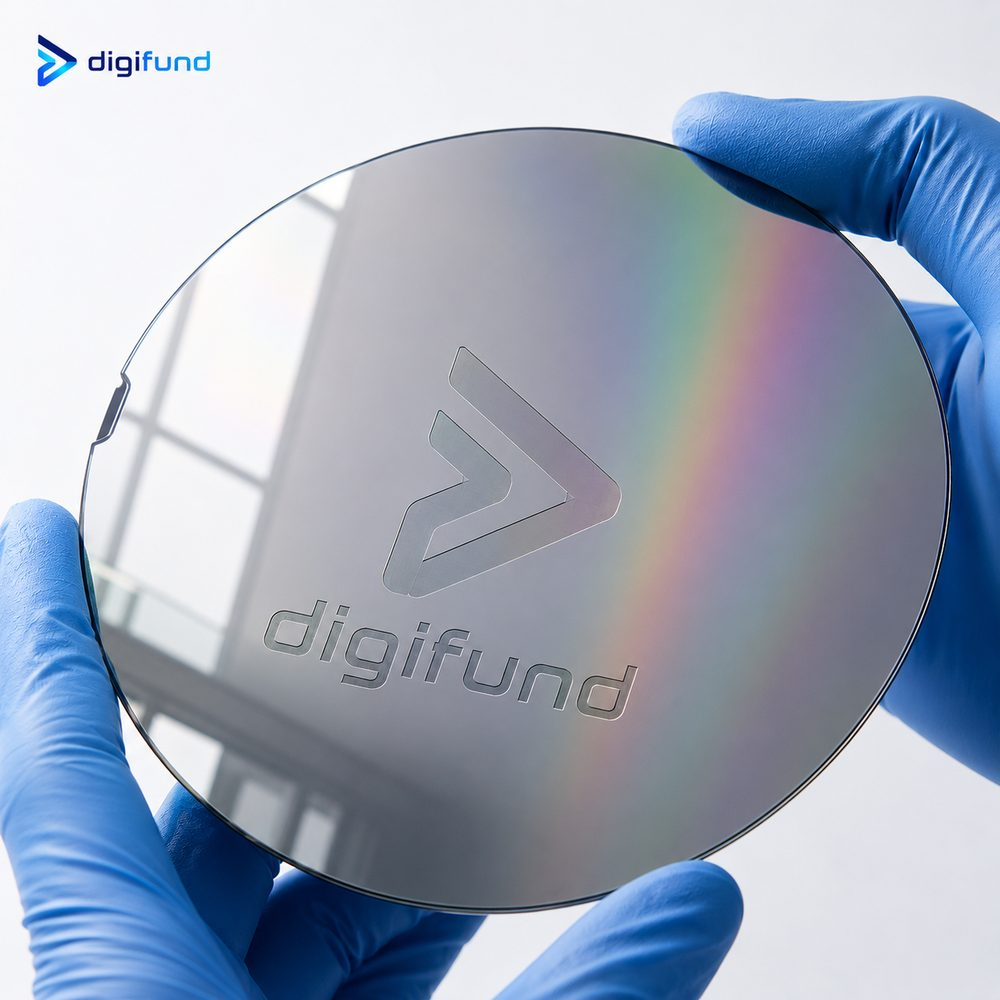
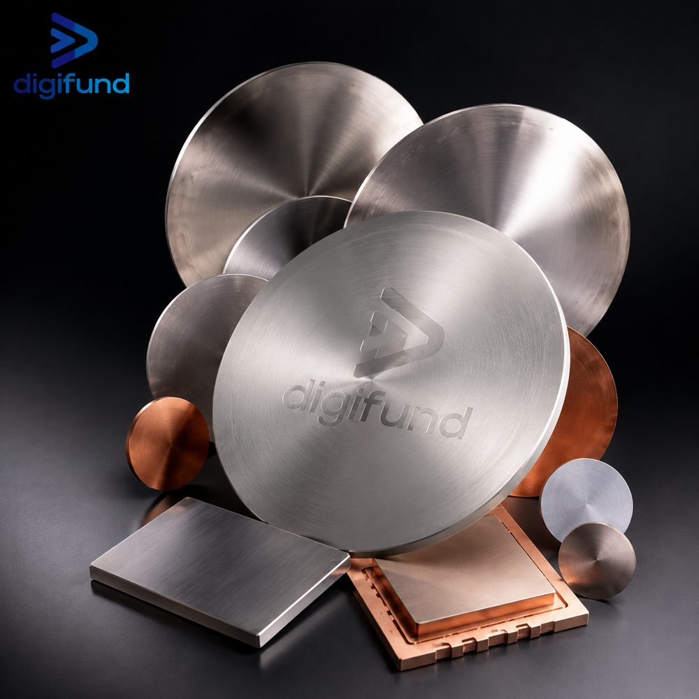
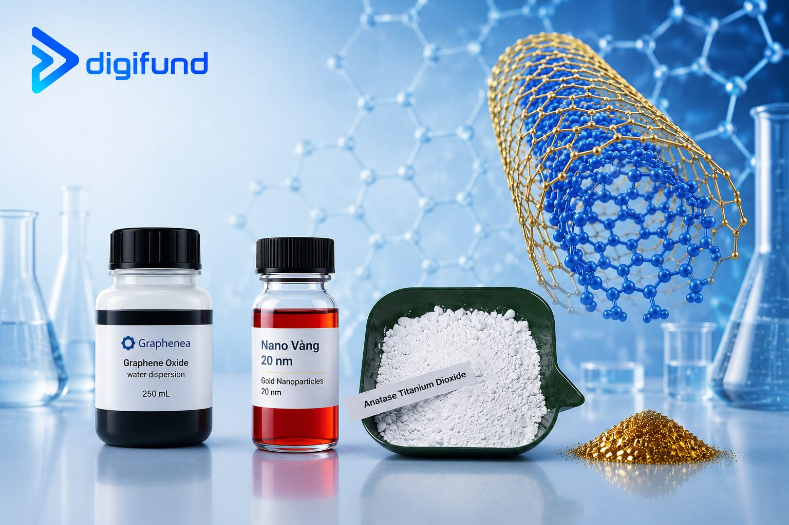

Silicon Wafer Vietnam – Semiconductor Wafer Supplier
Buy silicon wafers in Vietnam: wafer types, benefits of a domestic source and how to get a quote.
Read article →Silicon Wafer Pricing: 8 Cost Drivers
What really drives wafer prices, where to cut without hurting results, and a specification checklist for accurate quotes.
Read article →Silicon Wafer Supplier in Vietnam: Sourcing Guide
A guide for international buyers: available materials, specifications, order sizes, lead times, shipping and how to request a quote.
Read article →What Is a Silicon Wafer? Structure & Manufacturing
Definition, structure, the sand-to-wafer process and its role in the semiconductor industry.
Read article →
Sputtering Targets & Thin Films
Sputtering principles and the role of targets in thin films for solar cells and electronics.
Read article →
Nanomaterials: Graphene, CNT & Metal Nanoparticles
Properties and uses of graphene oxide, carbon nanotubes, gold nanoparticles and TiO₂ nanopowder.
Read article →More articles
CZ vs FZ Silicon Wafer: Detailed Comparison and How to Choose
The root difference between Czochralski and Float Zone, plus how to choose grade, polish and crystal orientation.
Choosing Wafers for Research: MEMS, Photonics, GaN Epitaxy
Which specification set to order for each research direction, with a quick reference table by application.
Types of Silicon Wafer: Si, SiC, GaAs, Sapphire, SOI
Compare common semiconductor wafer types by characteristics, strengths and applications.
Applications of Silicon Wafer in Semiconductors & Energy
Where silicon wafers are used — chips, sensors, solar cells — and why they are hard to replace.
The Photolithography Process
Step by step patterning on a wafer: photoresist, exposure, development, etching.
Cleanrooms & ISO Cleanliness Classes
ISO cleanliness classes, contamination control and cleanroom consumables in chip making.
Digifund — Silicon Wafer Supplier in Vietnam
We supply high-purity silicon wafers, substrates and semiconductor materials: Si, SiC, GaAs, Sapphire, InP, SOI, plus sputtering targets, chemicals and cleanroom equipment.
View product catalog Contact us